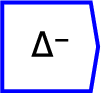
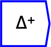
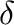
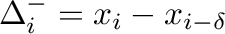
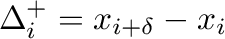

Next: inner product
Up: Tensor operations
Previous: running product
Contents
Computes
the nearest neighbour difference along a given direction.


These operators can be placed on the canvas in two ways:
- From the Scan Operations (``scan'') toolbar
 ;
or
;
or
- By typing the letters ``difference'' or ``differencePlus''
on the canvas and then pressing the Enter key.
The optional argument () can be used to specify the number
of neighbours to skip in computing the differences. For example if
your data is monthly and you want to calculate changes per year, you
would set to 12. The length of the dimension being differenced
is reduced by in the result.
It comes in two different forms which differ only in how the resultant
x-vector is calculated. , and
, where  refers to the x-vector
index.
refers to the x-vector
index.
Where there is more than one dimension to data, the user needs to
specify the axis along which the difference operation is calculated.